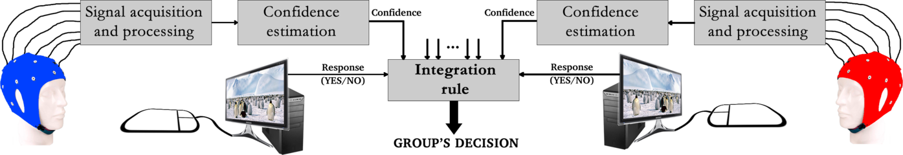
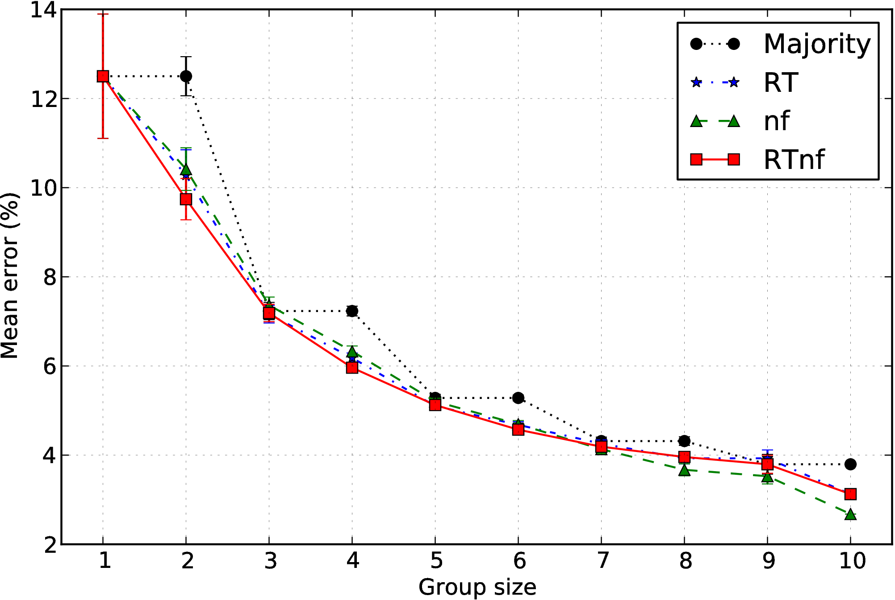
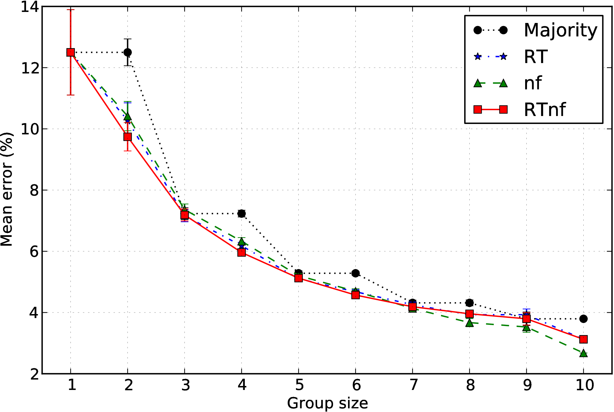
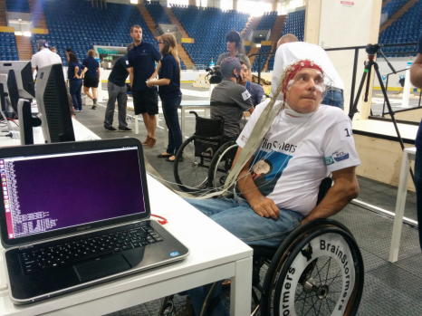

Projects
PhD - Improving group decision making with collaborative Brain-Computer Interfaces
My research is focused on using Brain-Computer Interfaces (BCIs) to improve group decision making. We are aware that group decisions are usually much better than the decisions made by an individual. This is why we usually make critical decisions in groups (e.g., committees, parliaments, etc.). Group decisions are the result of a process of integration of the multiple perspectives of its members, each of which brings a novel piece of information that might be useful for making the correct decision. This is what we call the wisdom of crowds (a good book about that).
Sometimes group decisions are not possible. For example, when we have time constraints that do not allow a complete discussion between the team members (that is a vital step of that integration process described above) or when a strong team leader can transform the group decision in an unilateral one. In these circumstances, group decisions could actually be worse than individual ones.
During my PhD, I investigated the possibility of using BCIs to extract neural information related to the confidence in a decision from the EEG signals of individual users. The BCI uses machine learning techniques to build an estimation of the confidence of each decision maker based on these neural correlates, response times (RTs) and other physiological measures (e.g., eye movements, skin conductance). These estimates are then used to weigh individual decisions proportionally and build a group decision. I call this collaborative BCIs (cBCIs) as multiple BCIs (i.e., one per user) are used jointly to achieve a goal (i.e., improve group decisions).

We firstly tested this approach with an easy visual matching task (see this paper) where users were presented two displays containing three shapes of different shades of grey and had to decide if the two stimuli contained the same shapes (picture below on the left).
Principal Component Analysis (PCA) has been used to extract neural features from the response-locked EEG epochs. The figure below (right) shows the mean error rates of groups of different sizes where group decisions were obtained by using the standard majority rule (black) or a weighted majority where the weighs were wither the RTs (blue), the confidence estimated by the BCI using EEG features (green) and a combination of RTs and the BCI confidence (red).
 

These promising results pushed me to further improve the system and put it on test with other tasks that were more complex and realistic.
Firstly, I tested this cBCI with a visual-search task using artificial stimuli (see this paper and the stimulus below on the left). Here, the cBCI has also been improved by changing the method used to extract neural features from the PCA used before to Common Spatial Pattern (CSP). This reduced the dimensionality of the problem and speed up the system by two orders of magnitudes. Moreover, stimulus-locked EEG epochs have been included in the analysis as they contain relevant information about the decision confidence that improved the performance of BCI-assisted groups.
A similar visual-search experiment has been conducted with realistic stimuli (see this paper and the stimulus below on the right). Here, the information about the decision confidence was extracted from the neural signals, the RTs and the eye movements. Eye movements and blinks, surprisingly, seem to correlate with the decision confidence and their inclusion significantly increase the performance of the system.


At the moment, I am testing the impact of interaction on group performance. More details on this will be added once the results have been published.
Cybathlon 2016
I am a member of the Essex Brainstormers, the team of BCI researchers (led by Ana Matran-Fernandez) from the University of Essex that will compete in the Cybathlon 2016. Cybathlon is the first international championship for parathletes assisted by technologies competing in six different disciplines, including BCI. In the BCI race, pilots have to control a videogame (3 commands available) with their mind.
Our team is developing a whole asynchronous BCI that is able to recognise different mental tasks from the EEG signals recorded from our pilot David and map them to the various commands supported by the game. The system is obviously very complex as it includes the development of various parts. One of the most difficult parts is the multi-class classification. For this task, we developed a multilayer ensemble (see this abstract and the relative presentation). The BrainStormers are supported by a Research Innovative Fund grant and by a crowdfunding campaign with which we raised more than £3,000.
The research conducted with the Brainstormers has attracted the interest of the media including ITV Anglia and Inside Cybathlon.

EyeWink
EyeWink is a concept of a wearable device that allows a user to control his smartphone with eye winks. It detects muscular activity around the eyes by means of two electrodes placed on the forehead. The recorded signals are then processed by an electronic board to identify if the user had winked with either eye (see this paper). Then, winks are transformed in commands and sent to the smartphone to be executed. The user can select which command he/she wants to perform with either eye via a smartphone app.
After pitching the idea at HackTheBrain UK, my team developed a first fully-working prototype in only 8 hours using OpenBCI. After winning the hackathon, I decided to keep working on the idea with Ana Matran-Fernandez to bring it to the market. In November 2015 we started a crowdfunding campaign that allowed us to raise £4,605 to support the development, and in December 2015 I co-founded EyeWink Ltd.
EyeWink has attracted a lot of interest from the media and the public. We have presented the technology in the London Science Museum twice, once in April 2015 within the exhibition "You have been upgraded" and once in April 2016 for the Science Museum Lates focused on neuroscience. We have appeared on ITV Anglia, Popular Science, Motherboard magazine, IDG connect blog, IDG connect innovation, Neurotech news, Christine Michaelis blog, our department newsletter, the University of Essex daily news, NERRI project blog, some Italian newspapers including Il Fatto Quotidiano, 24Emilia, Resto del Carlino, Gazzetta di Reggio, and radios like Radio Città Aperta.